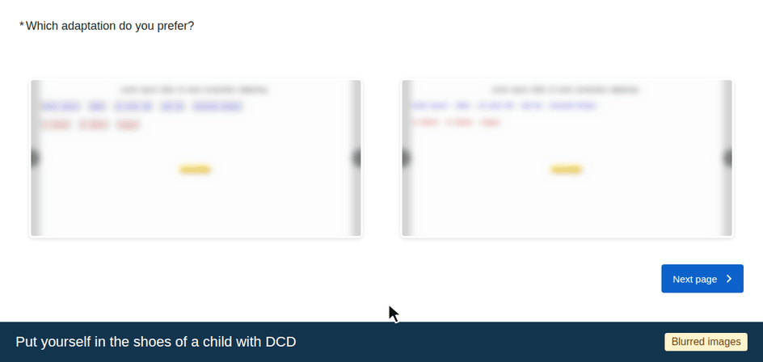

Comparing adaptations
Several pairs of versions of the same exercise.
Still in the shoes of a child with DCD, choose the most effective one.
Click on the image you choose (blue outline), then move on to the next pair.
No right or wrong answers.
